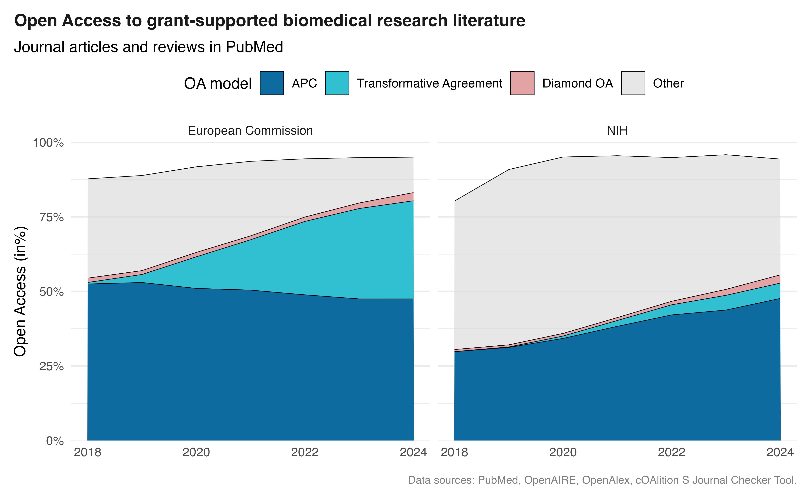

library(tidyverse)
library(bigrquery)
library(DBI)
# Connect to GBQ with billing project from SUB Göttingen,
# You have to use your own :-)
bq_con <- dbConnect(
bigrquery::bigquery(),
project = "subugoe-collaborative",
dataset = "openalex",
billing = "subugoe-collaborative"
)Crosswalking ORION resources to measure open access to biomedical research literature
The role of transformative agreements for NIH- and EC-funded research
tutorial
open access
transformative agreements
funder info
Najko Jahn ![]()
Bianca Kramer
Cameron Neylon
Nick Haupka
Abstract
This tutorial shows how to combine various ORION resources, with a focus on funder and open access. Using the National Institutes of Health (NIH) and the European Commission (EC) as examples, it draws on data from PubMed, OpenAIRE, OpenAlex, and transformative agreement data from cOAlition S and ESAC. The analysis covers more than 800,000 biomedical research articles, revealing notable differences in open access uptake between NIH- and EC-supported research.
Introduction
This tutorial shows how to measure open access by funder over time using open research information resources provided by the ORION community on Google BigQuery. We compare NIH- and European Commission-supported biomedical research literature with a focus on open access, including an estimation of articles enabled by transformative agreements. Transformative agreements have played an important role in Europe for several years, but the effect of these agreements on open access to EC grant-supported articles remains unclear. Recent discussions around the NIH open access policy and price caps for publication fees furthermore raise the question about the role of similar agreements in the US.
The ultimate goal in this tutorial is to re-create the following visualisation using ORION resources, with a special emphasis on funder information and different open access business models.

The area chart compares open access to biomedical research literature supported by the European Commission and the NIH between 2018 and 2024. Although both funders achieved open access to over 90% of their grant-supported output, the underlying funding models differ. Notably, the proportion of open access enabled by transformative agreements is substantially larger for research funded by the European Commission than for research funded by the NIH, reflecting the wider availability of such agreements in Europe. This illustrates potential shifts in the US that could be driven by the increasing prevalence of open access agreements designed to accommodate funder open access policies and price caps, as suggested by publishing market observers and researchers (Clarke & Esposito, 2025; Haustein et al., 2025).
Overview of data sources
Using this policy debate as a starting point, this tutorial combines several resources into a unified dataset on open access in biomedical research literature, with a particular focus on publisher-provided open access through transformative agreements.
Our open research information resources are:
Identifying grant-supported biomedical research literature
- PubMed: The starting point and a standard source for biomedical research literature, which is used to retrieve NIH grant-supported publications. PubMed is not available through one of ORION’s data offerings, so data are retrieved via the Entrez API. PubMed identifiers (PMIDs) serve as the linking key for biomedical research publications.
The script used can be found here.
- OpenAIRE: The OpenAIRE graph, provided by Sesame Open Science on ORION, is used to identify publications supported by the European Commission. OpenAIRE also contains PMIDs for PubMed-indexed articles, which allows filtering to biomedical research literature and linking to the other sources. OpenAIRE is considered the most comprehensive source for EC-funded publications (Mugabushaka et al., 2021).
Publication metadata
- OpenAlex: The primary source for bibliographic metadata in this tutorial. OpenAlex records also include PMIDs as identifiers. We will use the SUB Göttingen OpenAlex offering.
- Document classification: A document classification dataset, developed as part of the German Competence Network for Bibliometrics and provided by SUB Göttingen, is used to restrict the sample to original research articles (Haupka, 2026).
Open access information
- OpenAlex: Provides article- and journal-level open access status.
- cOAlition S Journal Checker Tool Transformative Agreement data: Contains institution- and journal-level data crowd-sourced about agreements listed in the ESAC registry. SUB Göttingen enriches and consolidates this information and links articles to agreements.
Querying BigQuery
Let’s query these data sources step-by-step.
Setup
To connect with BigQuery using R, we use the bigrquery package. The connection is established as follows:
Create a publication metadata set
This section describes how to assemble the analytical dataset, combining grant funding information from PubMed and OpenAIRE with publication metadata from OpenAlex.
It is generally good practice to begin with a subset that contains only the columns needed for your analysis. This reduces query costs, keeps the working dataset to a manageable size, and helps safeguard the metadata used for further analysis and validation.
Our first step is to build a publication dataset enriched with grant funding information from the NIH and the European Commission. Because PubMed is not yet part of ORION, NIH funding data are retrieved directly from PubMed via the Entrez API.
The result is a list of PMIDs representing NIH-supported publications, which we then upload to BigQuery.
pmids_nih <- read_lines("nih_pmids_2018_2024.txt")
dbWriteTable(bq_con, # Our BQ connections
"subugoe-collaborative.resources.nih_pmids_2018_2024", # Table name
tibble::tibble(pmids_nih = pmids_nih), # PMIDs in rectangular format with column name
overwrite = TRUE
)In total, PubMed indexed 824,060 publications with NIH support between 2018 and 2024.
Next, we combine this list with OpenAIRE to add European Commission-supported biomedical literature, and with OpenAlex to obtain full publication metadata.
The resulting table is stored as subugoe-collaborative.resources.oa_tutorial_md_raw, and is publicly accessible. You will need to substitute your own dataset name.
CREATE OR REPLACE TABLE `subugoe-collaborative.resources.oa_tutorial_md_raw` AS (
WITH openaire_funders AS (
SELECT DISTINCT
pid.value AS pmid,
fund.name AS funder
FROM `sos-datasources.openaire.project_20260129` AS proj,
UNNEST(fundings) AS fund
INNER JOIN `sos-datasources.openaire.relation_product_project_20260129` AS pub_proj
ON proj.id = pub_proj.target
INNER JOIN `sos-datasources.openaire.publication_20260129` AS pub
ON pub_proj.source = pub.id,
UNNEST(pub.pids) AS pid
WHERE fund.name IN ('European Commission')
AND pid.scheme = 'pmid'
),
nih_funders AS (
SELECT DISTINCT
CAST(pmids_nih AS STRING) AS pmid
FROM `subugoe-collaborative.resources.nih_pmids_2018_2024`
),
all_funders AS (
SELECT pmid, 'European Commission' AS funder
FROM openaire_funders
UNION ALL
SELECT pmid, 'NIH' AS funder
FROM nih_funders
)
SELECT DISTINCT
oalex.id,
oalex.doi,
oalex.ids.pmid,
oalex.ids.pmcid,
publication_year,
publication_date,
primary_location.source.issn_l AS issn_l,
primary_location.source.is_in_doaj AS is_in_doaj,
open_access.oa_status AS oa_status,
country AS country_code,
inst.ror,
af.funder AS funders
FROM `subugoe-collaborative.openalex_walden.works` AS oalex
LEFT JOIN
UNNEST(authorships) AS au WITH OFFSET AS pos
LEFT JOIN
UNNEST(au.countries) AS country
LEFT JOIN
UNNEST(au.institutions) AS inst
LEFT JOIN `subugoe-collaborative.resources.document_classification_september25` AS doctype_classifier
ON oalex.doi = doctype_classifier.doi
LEFT JOIN all_funders AS af
ON REGEXP_EXTRACT(oalex.ids.pmid, r'(\d+)$') = af.pmid
WHERE
pos = 0
AND primary_location.source.type = "journal"
AND is_paratext = FALSE
AND oalex.type IN ('article','review')
AND is_research = TRUE
AND is_xpac = FALSE
AND (
NOT REGEXP_CONTAINS(oalex.biblio.issue, '^[a-zA-Z]')
OR oalex.biblio.issue IS NULL)
AND (
NOT REGEXP_CONTAINS(oalex.title, '[0-9]{3} pp.'))
AND publication_year BETWEEN 2018 AND 2025
)The query uses Common Table Expressions (CTEs), introduced with WITH, to build up the dataset in stages. The first CTE, openaire_funders, extracts EC-funded publications from OpenAIRE by unnesting the fundings array, filtering for the European Commission, and joining to the OpenAIRE publication and relation tables to retrieve the associated PMIDs. The second CTE, nih_funders, reads the PMID list we uploaded in the previous step. Both are combined in all_funders using UNION ALL.
The main query retrieves metadata for all journal articles in the OpenAlex snapshot and joins the funder information. Several filters are applied to keep the dataset focused on relevant publications, following Jahn (2025): only journal articles and reviews are included; first author affiliations are used (identified via WITH OFFSET because the author position field was not available in this snapshot); and a set of pattern-based exclusions removes conference proceedings and other non-standard records. The dataset covers publications from 2018 to 2025.
Estimate articles covered by transformative agreements
Next, we estimate how many open access articles were enabled by a transformative agreement, following the method more comprehensively described in Jahn (2025) and Jahn (2026). Because of a lack of open access invoicing data, usually not shared by libraries and publishers, various metadata sources are matched to obtain an estimation. Such an approach can provide robust results, but likely underestimate the overall number of articles enabled by agreements (de Jonge et al., 2025).
We will discuss these shortcomings in more detail at the end of the tutorial.
The query draws on several datasets from the Journal Checker Tool, provided by SUB Göttingen as part of the open bibliometric data offerings from the German Competence Network for Bibliometrics.
CREATE OR REPLACE TABLE `subugoe-collaborative.resources.oa_tutorial_jct_articles` AS (
WITH
-- Enrich ROR variants from associated institutions
obtain_associated_ror_ids AS (
SELECT
esac_id,
jct_inst.ror_id AS ror_jct,
inst.ror AS ror_associated
FROM
`subugoe-collaborative.openbib.jct_institutions` AS jct_inst
LEFT JOIN
`subugoe-collaborative.openalex.institutions` AS oalex_inst
ON
jct_inst.ror_id = oalex_inst.ror
LEFT JOIN
UNNEST(oalex_inst.associated_institutions) AS inst
),
create_matching_table AS (
SELECT esac_id, 'ror_jct' AS ror_type, ror_jct AS ror
FROM obtain_associated_ror_ids
UNION ALL
SELECT esac_id, 'ror_associated' AS ror_type, ror_associated AS ror
FROM obtain_associated_ror_ids
),
enriched_ror_variants AS (
SELECT DISTINCT
create_matching_table.*,
DATE(jct_inst.start_date) AS start_date,
DATE(jct_inst.end_date) AS end_date
FROM create_matching_table
INNER JOIN `subugoe-collaborative.openbib.jct_esac` AS jct_inst
ON create_matching_table.esac_id = jct_inst.id
),
journal_agreements AS (
SELECT
j.issn_l,
e.id AS esac_id
FROM `subugoe-collaborative.openbib.jct_journals` AS j
INNER JOIN `subugoe-collaborative.openbib.jct_esac` AS e
ON j.esac_id = e.id
)
SELECT DISTINCT
md.id,
md.doi,
md.issn_l AS matching_issn_l,
md.ror AS matching_ror,
erv.ror_type,
erv.esac_id,
erv.start_date,
erv.end_date,
md.publication_date
FROM `subugoe-collaborative.resources.oa_tutorial_md_raw` AS md
INNER JOIN journal_agreements AS ja
ON md.issn_l = ja.issn_l
INNER JOIN enriched_ror_variants AS erv
ON md.ror = erv.ror
AND ja.esac_id = erv.esac_id
WHERE
md.ror IS NOT NULL
AND md.issn_l IS NOT NULL
AND (PARSE_DATE('%Y-%m-%d', md.publication_date) >= erv.start_date OR erv.start_date IS NULL)
AND (PARSE_DATE('%Y-%m-%d', md.publication_date) <= erv.end_date OR erv.end_date IS NULL)
-- Only TA OA articles
AND oa_status IN ('gold', 'hybrid')
ORDER BY erv.esac_id, md.publication_date
)With these two datasets in place, we are ready to proceed with the funder-specific open access analysis.
Create the analytical dataset: funder view
The following query combines the publication metadata table with the transformative agreement articles table to count articles by funder, publication year, and open access type. It also calculates the total number of articles per funder and year, which serves as the denominator for open access proportions.
The analysis focuses on articles made freely available on the journal website, covering gold open access in DOAJ-listed journals, hybrid open access, and diamond open access. Repository-based open access, such as deposits in PubMed Central, is not distinguished further and is grouped into the “Other” category. The same applies to bronze; many biomedical journals make back issues freely available on their websites after an embargo period (Piwowar et al., 2018), a practice that helped comply with the previous NIH public access mandate prior to 2025.
WITH
oa AS (
SELECT
publication_year,
funders,
CASE
WHEN (is_in_doaj = TRUE AND oa_status = 'gold') THEN 'gold_is_in_doaj'
WHEN (is_in_doaj = TRUE AND oa_status = 'diamond')
THEN 'diamond_is_in_doaj'
WHEN oa_status = 'hybrid' THEN 'hybrid_oa'
WHEN oa_status != 'closed' THEN 'other_oa'
END AS oa_type,
CASE
WHEN jct.doi IS NOT NULL THEN TRUE
ELSE FALSE
END AS enabled_ta,
COUNT(DISTINCT md.pmid) AS n_oa_articles
FROM `subugoe-collaborative.resources.oa_tutorial_md_raw` AS md
LEFT JOIN
(
SELECT DISTINCT doi
FROM `subugoe-collaborative.resources.oa_tutorial_jct_articles`
) AS jct
USING (doi)
WHERE funders IS NOT NULL
GROUP BY
publication_year,
funders,
oa_type,
enabled_ta
),
total AS (
SELECT
publication_year,
funders,
COUNT(DISTINCT pmid) AS articles
FROM `subugoe-collaborative.resources.oa_tutorial_md_raw`
GROUP BY
publication_year,
funders
)
SELECT
total.publication_year,
total.funders,
total.articles,
oa.n_oa_articles,
oa.oa_type,
oa.enabled_ta
FROM total
LEFT JOIN oa
ON
total.publication_year = oa.publication_year
AND total.funders = oa.funders
WHERE total.funders IS NOT NULL AND total.publication_year < 2025
ORDER BY total.publication_year DESCThe query result is stored in an R object called funding_oa for further local analysis.
funding_oa
#> # A tibble: 109 × 6
#> publication_year funders articles n_oa_articles oa_type enabled_ta
#> <int> <chr> <int> <int> <chr> <lgl>
#> 1 2024 European Commissi… 26941 1346 <NA> FALSE
#> 2 2024 European Commissi… 26941 9466 gold_i… FALSE
#> 3 2024 European Commissi… 26941 2170 gold_i… TRUE
#> 4 2024 European Commissi… 26941 3190 other_… FALSE
#> 5 2024 European Commissi… 26941 6693 hybrid… TRUE
#> 6 2024 European Commissi… 26941 3327 hybrid… FALSE
#> 7 2024 European Commissi… 26941 740 diamon… FALSE
#> 8 2024 European Commissi… 26941 9 other_… TRUE
#> 9 2024 NIH 89744 5054 <NA> FALSE
#> 10 2024 NIH 89744 30150 gold_i… FALSE
#> # ℹ 99 more rowsResults
Using the so-compiled data, we can calculate the number and proportion of open access by funder and publication year.
To do so, we furthermore break down open access by business model, distinguishing four categories using a combination of OpenAlex data and estimates derived from the Coalition S Transformative Agreement data:
- APC: gold or hybrid open access, not via a transformative agreement
- Transformative Agreement: gold or hybrid open access enabled by a transformative agreement
- Diamond OA: diamond open access (no article processing charge)
- Other: all remaining open access routes (e.g. via PubMed Central)
Note that the focus is on publisher open access business models, and OpenAlex open access status definition favors publisher-provided open access, so articles in PMC repositories are accounted for when there was no open version on a publisher website.
oa_by_year_and_type <- funding_oa |>
filter(!is.na(oa_type)) |>
mutate(oa_cat = case_when(
oa_type %in% c("gold_is_in_doaj", "hybrid_oa") & enabled_ta == FALSE ~ "APC",
oa_type %in% c("gold_is_in_doaj", "hybrid_oa") & enabled_ta == TRUE ~ "Transformative Agreement",
oa_type == "diamond_is_in_doaj" ~ "Diamond OA",
.default = "Other")
) |> summarise(n_oa = sum(n_oa_articles),
.by = c(publication_year, funders, articles, oa_cat)
) |>
mutate(oa_prop = n_oa / articles,
oa_cat = factor(oa_cat, levels = c("APC", "Transformative Agreement", "Diamond OA", "Other")))oa_by_year_and_type
#> # A tibble: 56 × 6
#> publication_year funders articles oa_cat n_oa oa_prop
#> <int> <chr> <int> <fct> <int> <dbl>
#> 1 2024 European Commission 26941 APC 12793 0.475
#> 2 2024 European Commission 26941 Transformative A… 8863 0.329
#> 3 2024 European Commission 26941 Other 3199 0.119
#> 4 2024 European Commission 26941 Diamond OA 740 0.0275
#> 5 2024 NIH 89744 APC 42768 0.477
#> 6 2024 NIH 89744 Transformative A… 4596 0.0512
#> 7 2024 NIH 89744 Other 34840 0.388
#> 8 2024 NIH 89744 Diamond OA 2486 0.0277
#> 9 2023 NIH 97390 Other 43955 0.451
#> 10 2023 NIH 97390 APC 42607 0.437
#> # ℹ 46 more rowsUsing these aggregated data, we present the relative development of open access by business model:
oa_by_year_and_type |>
ggplot(aes(publication_year, oa_prop, fill = fct_rev(oa_cat))) +
geom_area(color = "black", linewidth = 0.2) +
facet_wrap(~funders) +
scale_y_continuous("Open Access (in%)",
labels = scales::percent_format(), limits = c(0, 1),
expand = c(0, 0)
) +
scale_fill_manual("OA model",
values = c(
"APC" = "#0E6BA0",
"Transformative Agreement" = "#30C0D2",
"Diamond OA" = "#E2A3A4",
"Other" = "#D8D8D8a0"
)
) +
labs(
x = NULL,
title = "Open Access to grant-supported biomedical research literature",
subtitle = "Journal articles and reviews in PubMed",
caption = "Data sources: PubMed, OpenAIRE, OpenAlex, cOAlition S Journal Checker Tool."
) +
theme_minimal() +
theme(
panel.grid.major.x = element_blank(),
panel.grid.minor.x = element_blank(),
plot.title = element_text(face = "bold", size = rel(1.1), color = "grey10", margin = margin(b = 8)),
plot.title.position = "plot",
plot.caption = element_text(hjust = 1, size = rel(0.7), color = "grey50", margin = margin(t = 12)),
plot.caption.position = "plot",
legend.position = "top",
plot.margin = margin(10, 10, 10, 10)
) +
guides(fill = guide_legend(reverse = TRUE))The figures highlight differences in how open access is financed across the two funder communities. In 2024, both achieved similarly high open access rates: 94% for NIH-supported biomedical research articles (84,690 out of 89,744 original research articles and reviews indexed in both PubMed and OpenAlex) and 95% for European Commission-funded research (25,595 out of 26,941). In both cases, around half of open access articles were enabled through individual article processing charges (APCs), and diamond open access played a minor role.
The key difference lies in transformative agreements. Only 5.4% of NIH-funded open access articles were covered by such agreements, with the remaining 41% made available through other routes, primarily via PubMed Central. For the European Commission, 35% were covered by transformative agreements, reflecting the wider adoption of them in Europe, while 12% came through other routes.
The comparison suggests that agreements between library consortia and publishers play an important role in making European Commission-funded publications available in Europe, raising questions about the relationship between funder open access mandates and the institutional agreements that facilitate compliance. The NIH in the US did achieve a similar overall open access share, but through a different route: a much larger proportion of articles falls exclusively in the “Other” category, likely representing articles deposited in PubMed Central under previous NIH mandates or made freely available on publisher websites after an embargo period acknowledging these policies.
Responsible use
This tutorial provides estimates relating to articles covered by transformative agreements. Due to a lack of invoice data, which is not usually shared by library consortia and publishers, we had to rely on approximations based on a combination of several data sources. The resources we use to identify articles under transformative agreements – the cOAlition S Journal Checker Tool and the ESAC registry – are based on voluntary contributions from various consortia (Kramer, 2024). The scope and eligibility criteria of transformative agreements also vary considerably (Rothfritz et al., 2024).
For the matching of transformative agreement data, affiliation information and author roles are crucial. Comparisons with Scopus and Web of Science showed that estimates are similar when open metadata is used to match proprietary databases with publicly available transformative agreement data (Jahn, 2026). However, as recent changes have demonstrated, OpenAlex affiliation data coverage can vary. Open access evidence can also differ across different sources and versions (Jahn, 2026).
These shortcomings apply to both open and proprietary research information resources. Using open research information resources and making them available on BigQuery allows large-scale data analysis to be independently carried out and scrutinised at reasonable computing costs (Neylon et al., 2026). This approach also demonstrates the value of combining multiple sources, each of which has its own limitations in terms of coverage and metadata quality, which helps navigate individual data gaps.
This tutorial can be reused for further monitoring exercises, especially as recent discussions around the NIH open access policy highlight that open access business models and transformative agreements will remain a subject of much debate in the years ahead.
Contributions
Najko Jahn wrote this data analysis. Bianca Kramer and Cameron Neylon provide OpenAIRE snapshots on BigQuery as part of the Sesame Open Science ORION collection. Nick Haupka takes care of the ORION resources provided by the SUB Göttingen.
Funding
Najko Jahn and Nick Haupka acknowledge funding from Federal Ministry of Research, Technology and Space, project German Kompetenznetzwerk Bibliometrie, OpenKB (16WIK2101F), and the German Research Foundation (DFG), project OA-Datenpraxis, Projektnummer 528466070.
References
Clarke & Esposito. (2025). Capped. The Brief. https://www.ce-strategy.com/the-brief/capped/
de Jonge, H., Kramer, B., & Sondervan, J. (2025). Tracking transformative agreements through open metadata: Method and validation using dutch research council NWO funded papers. Quantitative Science Studies, 6, 1215–1227. https://doi.org/10.1162/qss.a.24
Haupka, N. (2026). Presenting a classifier to improve the identification of research journal publications in OpenAlex. Scientometrics, 131(2), 925–941. https://doi.org/10.1007/s11192-025-05524-7
Haustein, S., Schares, E., Alperin, J. P., amargo, F. C., Céspedes, L., Poitras, C., & Strecker, D. (2025). NIH explores capping APCs: Let’s look at the evidence. https://doi.org/10.59350/scholcommlab.5645
Jahn, N. (2025). How open are hybrid journals included in transformative agreements? Quantitative Science Studies, 6, 242–262. https://doi.org/10.1162/qss_a_00348
Jahn, N. (2026). Estimating transformative agreement impact on hybrid open access: A comparative large-scale study using scopus, web of science and open metadata. Scientometrics, 131(2), 901–924. https://doi.org/10.1007/s11192-025-05390-3
Kramer, B. (2024). Study on scientific publishing in Europe – Development, diversity, and transparency of costs. Publications Office of the European Union. https://doi.org/doi/10.2777/89349
Mugabushaka, A.-M., Baglioni, M., Bardi, A., & Manghi, P. (2021). Scholarly outputs of EU research funding programs: Understanding differences between datasets of publications reported by grant holders and OpenAIRE research graph in H2020. https://arxiv.org/abs/2109.10638
Neylon, C., Kramer, B., Mazoni, A. F., Costas, R., Jahn, N., & Eck, N. J. van. (2026). Sharing the load: Building a collective to support open research information online. https://doi.org/10.54900/2pnyq-nhx95
Piwowar, H., Priem, J., Larivière, V., Alperin, J. P., Matthias, L., Norlander, B., Farley, A., West, J., & Haustein, S. (2018). The state of OA: A large-scale analysis of the prevalence and impact of open access articles. PeerJ, 6, e4375. https://doi.org/10.7717/peerj.4375
Rothfritz, L., Schmal, W. B., & Herb, U. (2024). Trapped in transformative agreements? A multifaceted analysis of >1,000 contracts. arXiv. https://arxiv.org/abs/2409.20224
Reuse
Citation
BibTeX citation:
@online{jahn2026,
author = {Jahn, Najko and Kramer, Bianca and Neylon, Cameron and
Haupka, Nick},
title = {Crosswalking {ORION} Resources to Measure Open Access to
Biomedical Research Literature},
date = {2026-03-13},
url = {https://orion-dbs.community/blog/posts/nih-ec-oa/},
langid = {en},
abstract = {This tutorial shows how to combine various ORION
resources, with a focus on funder and open access. Using the
National Institutes of Health (NIH) and the European Commission (EC)
as examples, it draws on data from PubMed, OpenAIRE, OpenAlex, and
transformative agreement data from cOAlition S and ESAC. The
analysis covers more than 800,000 biomedical research articles,
revealing notable differences in open access uptake between NIH- and
EC-supported research.}
}
For attribution, please cite this work as:
Jahn, N., Kramer, B., Neylon, C., & Haupka, N. (2026, March 13).
Crosswalking ORION resources to measure open access to biomedical
research literature. ORION-DBs Blog. https://orion-dbs.community/blog/posts/nih-ec-oa/